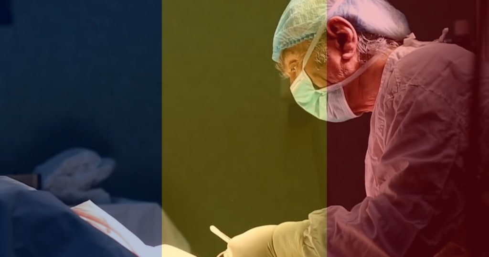
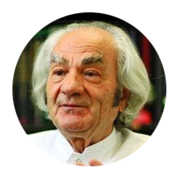
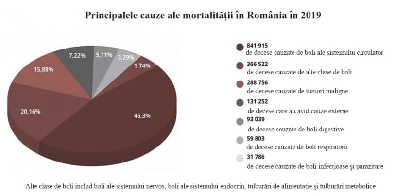
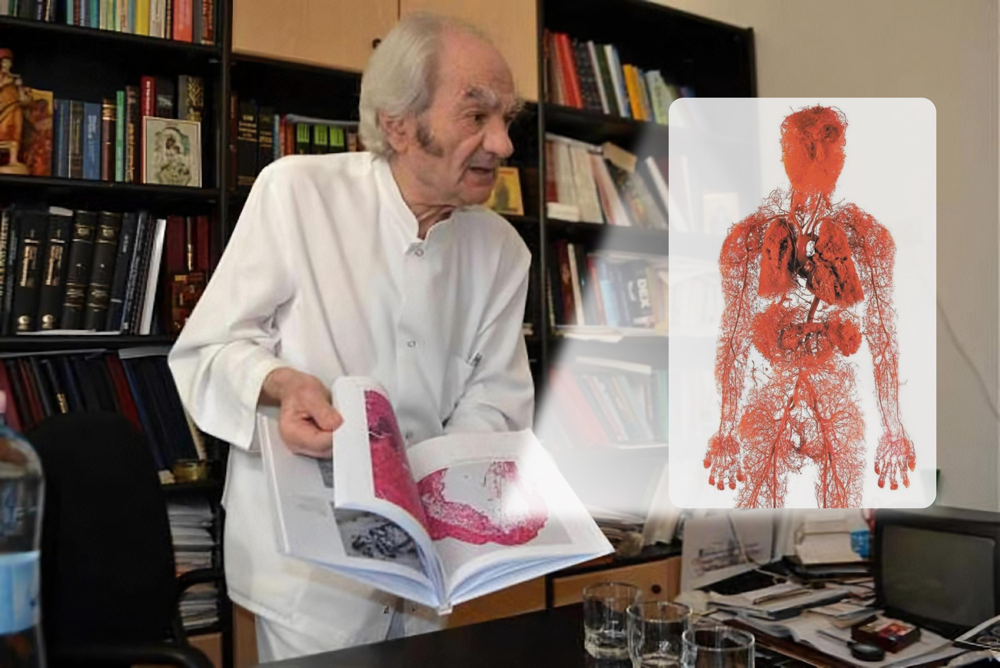
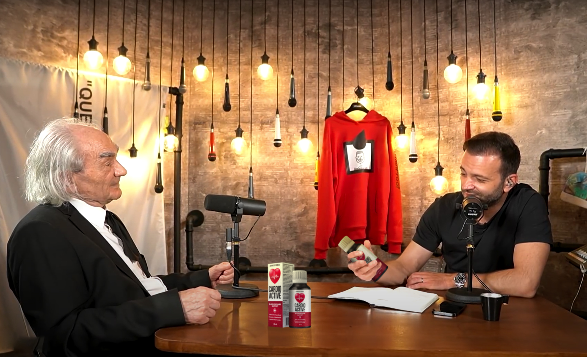
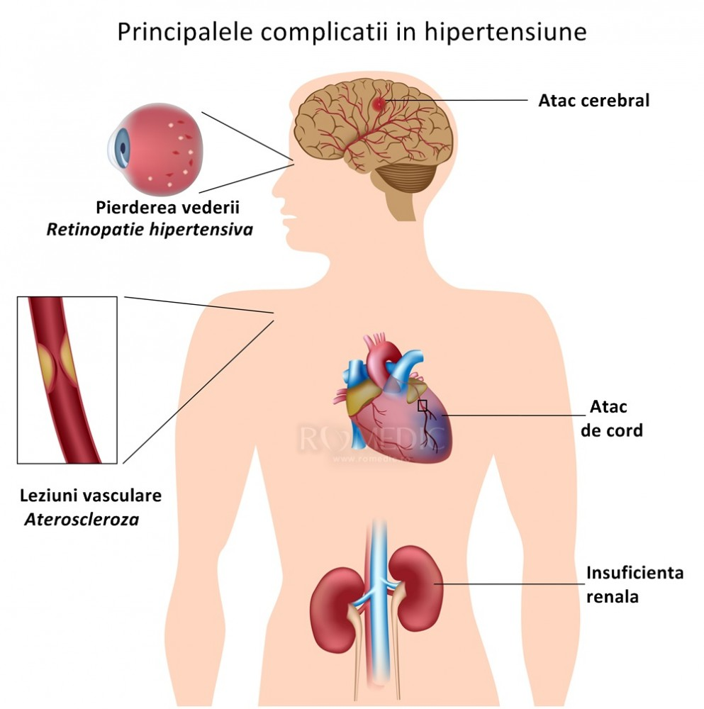

Dr. Leon Danaila
Figură publică

Îmi place

Scrie


Le place la 18 889 de persoane
Dr. Leon Danaila
4 de febrero a las 9:05
DESCOPERIRE INTERZISĂ: în 4 săptămâni, un remediu modern vă va scăpa definitiv de hipertensiune arterială, va întări vasele de sânge și va întări incredibil sistemul imunitar!
În timpul filmării unei emisiuni a avut loc o situație confuză, care i–a lăsat fără cuvinte pe „titanii” medicinii. Unul dintre experții invitați a început brusc să vorbească în afara scenariului. Prin declarația sa, el a uimit publicul din studio. Dar mai ales au fost vizați funcționari de la medicină.
Un cardiochirurg a declarat în mod deschis: „Lansați în eter informații despre viruși, dar închideți ochii la o problemă care în fiecare an ucide 1,5 milioane de oameni din România! De ce nu vorbește nimeni despre bolile sistemului cardiovascular? De ce tăceți cu toții că există deja un produs care elimină complet hipertensiunea arterială?”
Hipertensiunea - este principalul ucigaș al oamenilor. Nu numai în România, dar și în întreaga lume. Iar voi toți vă prefaceți că așa și trebuie. Nu observați produsele avansate care o dată pentru totdeauna rezolvă această problemă.
Bolile cardiovasculare sunt numărul 1 printre liderii mondiali de boli care provoacă decesul prematur. 94% dintre atacurile de cord și accidente vasculare cerebrale apar din cauza hipertensiunii. În 89% din cazuri de hipertensiune arterială infarctul miocardic și accidentul vascular cerebral se termină cu un rezultat letal. Dacă vorbim despre valori specifice, hipertensiunea arterială este cauza a aproximativ 77–78% de decese „naturale”. În cifre absolute, sunt aproximativ 1,5 milioane de decese în anul trecut – 2020, în timp ce voi vă bateți capul și introduceți măsuri incredibile din cauza diferitelor altor boli mai puțin periculoase.
„Oamenii mor din cauza inimii și a vaselor uzate! Rețineți acest lucru o dată pentru totdeauna!” – a spus Dr. Leon Danaila, unul dintre experții invitați, dar alți participanți literalmente s–au aruncat asupra lui, închizându–i gura. 
Statisticile sunt șocante! În fiecare an, bolile virale și infecțioase răpesc 25 de mii de vieți, iar aproape 500 000 de români au murit din cauza problemelor cu vasele și inima în aceeași perioadă de timp.
Și cel mai amuzant și, totodată, trist este că 99,87% din cazurile severe sunt persoane cu maladii ale vaselor! Cu hipertensiune. Cu maladii ale inimii. Dacă nu ar fi avut aceste boli, ei ar fi suportat totul asimptomatic. Dar altfel, acesta este principalul grup de risc. Și din nou, nimeni nu vorbește despre asta, pentru că imediat vine întrebarea, dar ce faceți pentru tratamentul vaselor de sânge și a inimii oamenilor?
În studio s-a început învălmășeala. Experții – reprezentanți ai Centrului de cercetare și medici ai clinicilor din București au început să se certe, întrerupându–se reciproc. Eterul a fost oprit în grabă și lansată imediat publicitatea. Iar domnul Danaila a fost alungat din studio.
În eter acest episod nu a mers. Dar publicul din studio a reținut acest incident pentru o lungă perioadă de timp.
Am decis să facem propria investigație și l–am căutat pe acest expert.
Profesorul Leon Danaila a efectuat peste 19.200 de operații pe creier. Cel mai tânăr pacient avea doar 2 zile.
Profesorul Leon Danaila are darul de a explica procesele complexe în cuvinte simple. El a scris 68 de cărți și manuale care sunt de înțeles pentru persoanele fără studii medicale. El este convins că vasele de sânge sunt responsabile de 90% din sănătatea noastră, iar bunăstarea noastră depinde de cât de curate sunt.
– Dr Danaila, se pare că toți colegii dvs. știu despre scandalul de la TV. Cum de nu v–a fost frică de așa ceva?
– Înțelegeam toate riscurile, dar nu mai puteam să tac. Nu poți bate apă în piuă și să nu oferi un tratament specific. Sunt medic, am depus jurământul și îl respect. Mă bucur că m–ați contactat pentru că îmi pot repeta cuvintele și pentru cititorii voștri.
Medicamente pentru multe boli, chiar și cele mai grave la sigur vor fi dezvoltate. Dar virusul lăcomiei și corupției va rămâne cu noi și îmi e frică că pentru totdeauna. Împotriva acestui virus, vaccinul nu a fost încă inventat.
– Despre ce anume vorbiți?
– Despre faptul că există boli care, în medicina noastră, sunt tratate ani de zile. Lucrez cu maladiile cardiovasculare, mă ocup de reabilitarea persoanelor care au suferit atacuri de cord și accidente vasculare cerebrale. Și în domeniul meu înșelăciunea este foarte frecventă.
Sunt sigur că la fel este și în tratamentul sistemului musculo–scheletic, gastrointestinal, orice boală poate fi tratată în funcție de simptome, ușurând starea, dar fără a reveni la sănătatea completă. Și vina aparține corporațiilor farmaceutice și reprezentanților medicali, care mituiesc medicii din România.
Vasele de sânge și hipertensiunea la noi nu sunt tratate
– Vreți să spuneți că toate medicamentele moderne pentru hipertensiune nu sunt eficiente?
Medicamentele pentru hipertensiune care sunt prescrise oficial îndeplinesc o funcție importantă, pompează bani din buzunarele pacienților în buzunarele oligarhilor medicali.
Sunt droguri legiferate. Judecați și voi. Pacientul ia pastila, starea sa se îmbunătățește. Acțiunea medicamentului se oprește și tensiunea crește din nou.
Așa funcționează toate drogurile. Pentru a te simți bine, trebuie să cauți o nouă „doză”. Principalul lucru este să înțelegeți următoarele: în situații de urgență, medicamentele „chimice” sunt necesare și importante.
Acestea salvează vieți când ai nevoie de ajutor urgent. În timpul primului război mondial, de exemplu, pe câmpul de luptă era folosit heroina, astfel încât răniții să nu moară de șocul algic.
– Dar oamenii trăiesc ani de zile pe medicamente
– Și narcomanii pot trăi mult timp. Dar ce fel de viață e asta?
Când te dor articulațiile. Când bărbații tineri, puțin peste 50, capătă prostatită și își pierd potența. Când rinichii nu mai funcționează și începi să ai edeme. În primul rând, se umflă picioarele, astfel încât poți merge cu greu. Apoi organele interne. Astfel încât burta devine ca un butoi.
Unele pastile, cu administrare prelungită, în general, sunt oncogene. Uitați–vă la statisticile privind cancerul, aceasta este o epidemie reală.
Nu mai vorbesc despre așa fleacuri, cum ar fi probleme de somn, tinitus, pierderea vederii și a auzului. Pot fi enumerate mult timp. Iar motivul este unul, vasele înfundate uzate pe care nimeni nu le tratează. Deși produsul există deja și are rezultate excelente.
Remediul împotriva hipertensiunii, care nu va fi în farmacii
– La filmarea emisiunii, ați încercat să spuneți despre un produs inovator pentru combaterea hipertensiunii și recuperarea vaselor de sânge, dar ați fost literalmente dat afară din studio. Ce produs este acesta? De ce reprezentanții farmaciilor reacționează la numele său ca vampirii la lumina soarelui?
– Am început să vorbesc despre produsul . Este un produs 100% natural cu o combinație unică de extracte din plante: păducel, sunătoare, hamei, coada calului, leonurus, tei.
este un produs al Centrului român de biologie moleculară. Componentele produsului sunt angajate în curățarea și „repararea” vaselor de sânge. Ele reduc rezistența la fluxul sanguin, provoacând creștere a aportului de sânge către inimă datorită expansiunii vaselor de sânge, îmbunătățesc starea vaselor sangvine, au efect antitrombotic.
curăță vasele de sânge și stabilizează tensiunea pentru ani de zile. Nu trebuie să fie luat în mod constant. În doar 4 săptămâni, restabilește rețeaua vasculară și tensiunea va fi 120 pe 80 în următorii ani.
Pentru dezvoltarea , colectivul savanților noștri a primit Premiul Internațional pentru biologie terapeutică. Pentru o descoperire inovatoare în tratamentul hipertensiunii arteriale și a patologiilor vasculare.
S–ar părea că după o astfel de recunoaștere, farmaciile ar trebui să stea la coadă pentru dreptul de a vinde . Statul trebuie să preia acest preparat. Dar nu este așa. Liniște totală, de mormânt. Nimeni parcă nici nu a observat descoperirea.
Iar reprezentanții afacerilor medicale chiar urăsc produsul. Au sute de titluri de medicamente, planuri de vânzări și venituri. Și cu o aceste planuri nu pot fi îndeplinite. Oamenii după 4 săptămâni cu uită drumul spre farmacie.
Iată care este cauza unei astfel de uri față de . Nu–l pot denigra. Totuși, are recunoaștere internațională, certificate, articole științifice, mii de pacienți satisfăcuți. Prin urmare, a fost aleasă strategia de boicotare. De a pretinde că nu există. Și când am început să vorbesc despre el în aer, a fost manifestată o agresiune deschisă la adresa mea.
Lansarea autorecuperării organismului
Scopul principal al este scăderea tensiunii arteriale. Aceasta este fundația pe care se bazează sănătatea dvs.
scade tensiunea arterială în 3 etape:
- Distruge plăcile de colesterol;
- „Repară” deteriorările pereților vaselor;
- Îmbunătățește conducerea impulsurilor nervoase de la creier.
Restabilirea fluxul sanguin și întărirea pereților vaselor de sânge declanșează o reacție în lanț de restabilire a organismului. Sunt declanșate forțele imune ascunse și organismul începe să se recupere.
Acest proces de autorecuperare este numit autoregenerare. Aceste mecanisme sunt inerente naturii, iar este un catalizator, cheia care pornește autoregenerarea. 
Scăpați de 7 boli în 4 săptămâni
– Ce veți obține după un curs cu ?
1. Tensiunea ca a unui astronaut
În primul rând, este normalizarea hipertensiunii arteriale. După 4 săptămâni de administrare regulată a , rețeaua vasculară a corpului este complet reînnoită. Vasele devin elastice și rezistente. Cu alte cuvinte, vasele revin la viață și fără probleme „sting” oscilațiile tensiunii sangvine. Din cauza nervilor sau din cauza efortului fizic, vasele reînnoite compensează orice fluctuații și vor menține o tensiune stabilă de 120 pe 80.
2. Îmbunătățirea activității creierului
După curs cu , circulația cerebrală se îmbunătățește cu 73%.
Pacienții cu bucurie menționează:
- Îmbunătățirea memoriei;
- Normalizarea somnului, dispariția letargiei și slăbiciunii;
- Dispariția tinitusului;
- Dispariția durerilor de cap.
3. Îmbunătățește acuitatea vizuală, restabilește retina
curăță nu numai vasele mari și arterele, dar și cele mai mici capilare. Acestea sunt deosebit de multe în ochi. Acest lucru duce la reînnoirea celulelor retiniene și la îmbunătățirea tonusului muscular al ochilor.
- Se îmbunătățește acuitatea vizuală de la 0,5 la 2,1 unități;
- Se normalizează presiunea oculară;
- Scad simptomele cataractei.
4. Dispar edemele
Se restabilește funcționarea corectă a rinichilor și schimbul de lichide în organism. Rinichii nu mai rețin apa și nu mai trebuie să luați diuretice.
- Nu se mai umflă și nu mai dor picioarele;
- Abdomenul se micșorează în volum, deoarece edemele organelor scad;
- Dispare lichidul din plămâni, respirația devine mai ușoară.
5. Se atenuează simptomele hemoroizilor și prostatitei
Vasele slabe și deteriorate sunt cauza principală a unor astfel de boli frecvente, cum ar fi:
- Varicele;
- Hemoroizii;
- Prostatita;
- Impotența.
Cursul cu restabilește vasele de sânge în fiecare organ. Când dispare cauza, manifestările neplăcute ale bolilor scad, iar în 73% din cazuri dispar complet.
Bărbații sunt deosebit de impresionați de restabilirea potenței. Chiar și la vârsta venerabilă de peste 70 de ani, ei sunt surprinși să observe că le–a revenit puterea masculină.
6. Restabilește inima
Curățarea aortei are un efect benefic asupra tonusului mușchiului cardiac. În 93% din cazuri, dispare tahicardia, ischemia este vindecată în 99%.
- Se normalizează ritmul cardiac și pulsul;
- Dispar durerile de inimă;
- Riscul de atac de cord scade de 17 ori.
7. Începe să funcționeze imunitatea
Se îmbunătățește alimentarea cu sânge a măduvei osoase, care este implicată în producerea celulelor imune. Acest lucru duce la întărirea forțelor de apărare ale corpului.
Imunitatea este un apărător nu numai împotriva virușilor. Funcția principală a unei imunități puternice este protecția împotriva celulelor canceroase. Imunitatea puternică recunoaște și distruge celulele canceroase la timp. Nu permite apariția unei tumori complete.
Imunitatea, care funcționează cel puțin 50% este deja un obstacol de netrecut pentru viruși. Și astăzi aceasta este, de asemenea, foarte important.
Președintele Uniunii rețelelor de farmacie a spus, auzind despre
Radu Ignat, Președintele Uniunii rețelelor de farmacie din România.
L–am contactat pe farmacistul principal al țării și am vrut să aflăm de ce nu este nici într–o farmacie.
– Bună ziua, domnul Ignat. Spuneți–mi, vă rog, de ce farmaciile românești ignoră produsul ? Ați auzit de el?
– De ce faci provocări?! Nu voi răspunde la astfel de întrebări!!! Nu e treaba ta!
Cum se poate obține
– După o astfel de conversație cu farmacistul principal al țării, a devenit clar că în farmacii nu este și nici nu va fi. Dar este totuși posibil de a-l obține, nu–i așa?
– Da, toți cetățenii României pot comanda prin Internet direct de la producător. Vom asigura ca această oportunitate să nu fie folosită de speculatorii din farmacii
– Au existat precedente?
– Din păcate, da. Antreprenorii șmecheri au venit cu o schemă. Ei au comandat pentru persoanele în vârstă, profitând de reduceri. Și apoi revindeau pur și simplu mijlocul la un preț multiplicat.
– Într–o farmacie, de exemplu, au vândut cu 2500 RON pentru un curs de 4 săptămâni! Nu se încadrează nici într–o limită, înțelegeți. Așa că trebuie să fim vigilenți. Ca oamenii să–și comande pentru sine și să nu plătească zeci de mii de lei intermediarilor.
– De ce putem comanda numai prin Internet?
Acest lucru se face din trei motive:
- Garanția calității. este expediat cumpărătorului direct de la produscător;
- Protecție împotriva intermediarilor. Pentru ca nimeni să nu poată adăuga 1–2 mii pe revânzare;
- Livrare rapidă la adresă concretă.
Reduceri pentru pensionari
În prezent, programul Fondului de Asistență Socială funcționează pe întreg teritoriul României. Prin intermediul acestui program puteți comanda cu o reducere de 50%. Acest lucru se face ca parte a programului de prevenire a bolilor.
Inițial, reducerea a fost acordată numai pensionarilor. Cu toate acestea, amploarea problemei ne-a obligat să reconsiderăm termenii programului preferențial. Deoarece bolile sistemului cardiovascular sunt frecvente în rândul persoanelor de toate vârstele, promoția pentru achiziționarea produsului este acum valabilă pentru toți locuitorii din România!
Promoția nu va dura mult, deoarece numărul de pachete cu o reducere de 50% este limitat și se epuizează rapid. Profitați de oferta specială pentru a cumpăra chiar acum, nu va mai exista o a doua șansă.
Obțineți chiar acum!
Pentru a obține prin programul de asistență socială, veți avea nevoie doar de un telefon mobil.
Introduceți numărul și numele dvs. în formularul oficial de comandă de mai jos și faceți clic pe "PLASAȚI COMANDA".
Important! Doar 1 cerere pentru 1 număr de telefon!
Acum, cererile sunt acceptate și procesate non–stop. Dar, din cauza solicitărilor sporite, este posibil să trebuiască să așteptați puțin.
Apreciază
Comentariu
Distribuie

2783
Lorena Seva
Aș distruge acest canal, minte în mod constant, dansând pentru cei care le
achită bani!! Admir curajul acestui om, dar mi se pare că nu va mai putea face o carieră.

Acum 1 minut Îmi place
Ion Ogari
Cariera lui va merge doar în sus! Dacă ești pentru adevăr, atunci vei
câștiga! Nu–i este frică să vorbească despre ceea ce ajută, se vor forma cozi la el! Cred că îl voi
asculta și voi comanda .
54
Acum 1 minut Îmi place
Andreea Ștefănescu
Am suferit de hipertensiune arterială mulți ani de zile, am ajuns la
pierderea conștiinței, chiar s–au obișnuit la locul de muncă. Un pic de schimbare a vremii –
tensiunea
oscilează, m–am stresat – imediat sunt fără putere. Noaptea aveam tahicardie. Medicii mă speriau în
mod constant cu posibilitatea unui accident vascular cerebral, deoarece vasele nu rezistă unor
astfel
de oscilații. Îmi era frică, deoarece soțul meu a murit în urma unui accident vascular cerebral.
Despre am aflat accidental, am dat peste o mențiune într–un
articol și am decis să
încerc. De câteva luni de zile, am uitat de slăbiciune și de oscilațiile de tensiune. Mă simt
revigorată și ca și cum aș fi chiar mai tânără. Recomand tuturor!
81
Acum 1 minut Îmi place
Corina 82
Andrea, spune–mi, te rog, cum l–ai administrat? Unde ai comandat?
90
Acum 1 minut Îmi place
Andreea Ștefănescu
Andreea Ștefănescu
90
Acum 1 minut Îmi place
Andrei Conțu
Spuneți–mi mai multe, nu ai avut alergii? Am intoleranță pentru aproape
toate medicamentele, iar cu tensiunea am de mult timp probleme.

4 zile
Andreea Ștefănescu
Andrei, are o compoziție complet naturală, în principal extracte. Dacă
suporți bine remediile naturale, atunci aceasta este o opțiune excelentă!
1

4 zile
Ileana Stepa
Sunt medic și pot spune că hipertensiunea poate face o persoană incapabilă
de muncă într–un timp scurt. Prin urmare, este mai bine să aveți grijă de normalizarea tensiunii din
timp. nu este doar un produs care ajută la normalizare
tensiunii, ci și un produs
excelent de prevenire a acesteia. Din păcate, statisticile moderne sunt de așa natură încât
infarctul
și accidentele vasculare cerebrale reprezintă mai mult de 70% din decesele persoanelor sub 60 de
ani.
Adică, oamenii pur și simplu nu ajung până la vârsta de pensionare! Îi încurajez pe toată lumea să
aibă grijă de sănătatea lor și să trateze simptomele mai devreme decât va avea loc o ruptură sau un
blocaj al vasului. este un produs destul de ieftin și eficient
pentru a fi în fiecare
trusă de prim ajutor!

6 zile
Mirela Lăutar
Ileana, ai dreptate! Accidentul cerebral l–a lovit pe tatăl meu brusc, a
decedat chiar la locul de muncă. A fost un șoc pentru toată lumea. Acum, acasă, avem întotdeauna un
tonometru și îmi impun soțul și mama să măsoare în mod regulat tensiunea. Am făcut o comandă pentru
, într–adevăr, o prevenire e binevenită!
5

9 días
Vasile Băsescu
De asemenea, am comandat cursul cu o
reducere de 50% ca parte a
promoției, iar mâine curierul îmi va aduce coletul. Ileana, ca medic, vă rugăm să ne spuneți cum
aceste picături sunt mai bune decât alte remedii pentru hipertensiune arterială, care ne sunt
prescrise de medici în spital?
6 zile
Ileana Stepa
Este vorba despre componente naturale care nu dăunează ficatului și
esofagului, consolidând eficient pereții vaselor de sânge și stimulând propriile forțe ale
organismului, „reprogramându–l” la autorecuperare. Aceasta este o abordare inovatoare și nu toate
companiile farmaceutice au stăpânit–o încă, este o tehnologie scumpă. a reușit să
respecte această formulă perfectă.
6 zile
Vasilina2302
Acum, se desfășoară o promoție, puteți obține cu o reducere de 50%!
6 zile
Luminița 1214
Ne–au vorbit recent la o prelegere la medicină. Se pare că a fost
descoperită o combinație de substanțe naturale care se amplifică reciproc și întăresc pereții
vaselor.
A fost interesant.

6 zile
Vero Nika
care–i compoziția?
6 zile
Luminița 1214
Păducel, hamei, coada-calului, sunătoare, leonurus, tei. Dacă descriem pe
scurt, unele componente întăresc vasele de sânge, altele reduc cantitatea de ghiaguri și ard plăcile
formate, altele stimulează imunitatea organismului.

6 zile
Adelin Ra
Aoleu ce memorie au medicii!))))
6 zile
Vero Nika
Mulțumesc! Am găsit o descriere pe site, într–adevăr sunt componente
foarte
utile
6 zile
Daniela Oprescu
Remediile naturale sunt întotdeauna cele mai bune! Mi–am ars tot esofagul
cu
pastile. Unele vindecă, altele daunează. Bine că acum și medicina oficială trece la plante
medicinale
7 zile
Maria Romaniță
A încercat cineva în realitate? Există comentarii reale? Am foarte des
vertije, iar la medic nu am timp să merg
7 zile
Selena R.
Iau în fiecare zi! L–am descoperit
pentru mine acum o lună.
Într–adevăr, mă simt mult mai bine, înainte îmi era teamă să nu pierd cunoștința în metrou, îmi
scădea
tensiunea :(
7 zile
Irina Dumitrescu
Ieri, un curier mi-a livrat comanda de Cardio Active. Seara l–am luat și
m–am simțit mai ușor, a trecut zgomotul în cap. Continui să–l iau
7 zile
Rază de soare
Comand a doua oară pentru mine și
părinții mei. Un produs
foarte bun! Mă chinuiau migrenele și aveam adesea situații când mi se făcea întuneric în fața
ochilor,
până la pierderea cunoștinței. Cu totul a trecut, recomand!
Atât de multe comentarii
pozitive, vă mulțumesc fetelor! Îi voi comanda părinților!
7 zile
Lia Ciocârlia
echilibrează perfect tensiunea și
întărește bunăstarea
generală. Îl am pe masa de lucru, nu merg nicăieri fără el
7 zile
Daria Anton
Am citit despre de mult ori, are o
mulțime de recenzii bune. Se
spune că pentru recuperarea în urma accidentelor vasculare cerebrale și infarct e de neînlocuit. Am
comandat părinților, mai bine să prevenim!
7 zile
Dumitru R
Spuneți–mi, unde să comand să nu dau peste un fals?
8 zile
Ileana Cosânzeana
Trebuie să luăm doar aici! Vedeți în formularul de cerere holograma?
Aceasta
înseamnă 100% garanție a veridicității .
8 zile
Mariana L.
Bunica mea are așa ceva, a luat pentru mahmureală și a ajutat/o! :)
8 zile
Lana777
Am comandat pentru mama, a sunat curierul, vine mâine. Voi scrie mai
târziu
ce impresii am
8 zile
Zoro Zoro
Sper că mă va putea ajuta! Tensiunea
e prea mare, a doua
săptămână stau în pat :(
8 zile
Silvia Popescu
Părinții mei s–au odihnit la sanatoriu, li s–a administrat profilactic
. Mama se bucură nespus că poate fi cumpărat liber. Zice că
este mult mai ușor cu el!
8 zile
Ofelia 86
Medic amuzant, Dr. House. Trebuie să țin minte numele, vara îl voi lua la
țară, bătrânii au totdeauna probleme
8 zile
Roxana Becali
Am citit descrierea . În compoziția
acestor picături sunt
într-adevăr numai extracte naturale de plante. Dar, ca farmacist, pot spune: da, într–o astfel de
combinație există într–adevăr o stimulare activă a imunității. Am comandat un curs, voi studia
8 zile
Nicolae București
Iau în loc de vitamine. El și
bunăstarea îmbunătățește și, în
general, capul funcționează cumva mai bine :)
8 zile
Violeta Emeru
Site–ul arată reducere mare pentru ,
este adevărat?
8 zile
Lucreția
Dacă produsul este atât de bun cum se scrie, va fi o salvare. Sufăr de
hipertensiune arterială de mulți ani, și sunt alergică la aproape toate medicamentele.
9 zile
Crin Mâțu
Am comandat pentru mama. Acum doi ani, din cauza unui accident vascular
cerebral, l–am pierdut pe tatăl, nu vreau să–mi pierd și mama. Problemele vasculare iau oamenii prea
repede…
9 zile
Maria1111
Am mereu în trusa de prim ajutor.
Este mai bine să previi decât
să primești injecții de la ambulanță!
9 zile
Serena Săracu
Să ne dea Dumnezeu fiecărui sănătate!
9 zile